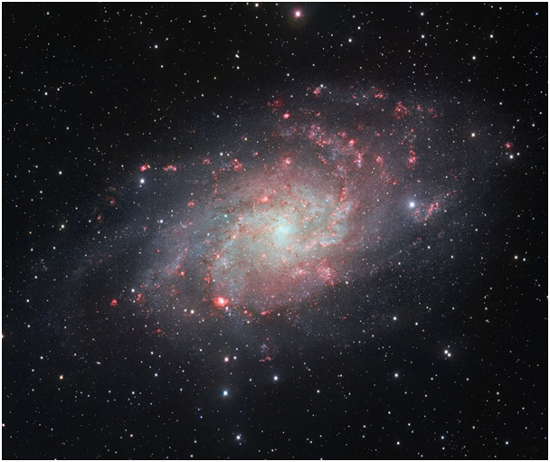
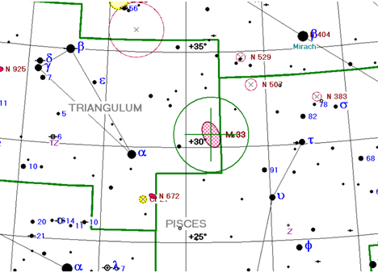
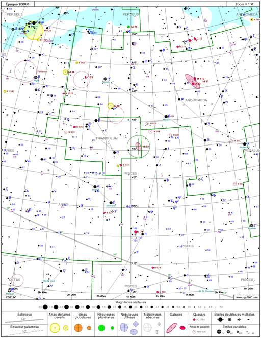

Les défis
Tous les mois, un défi est proposé aux membres de la communauté. Ce défi constitue en sorte un challenge à observer ou à photographier chaque mois avec l'instrument et les techniques de leur choix.
Les défis sont sélectionnés en fonction de l'intérêt, de la visibilité de l'objet au cours de l'année et également leur accessibilité à des instruments amateurs de diamètre modeste.
Ils sont classés avec différents niveux de difficultés de 1 à 5 :
| 1 et 2 | Pour les objets facilement visibles déjà à l'oculaire (objets de Messier) |
| 3 | Pour les objets à l'horizon ou faiblement étendues |
| 4 | Pour les objets visible à l'oculaire mais avec un filtre |
| 5 | Pour les objets uniquement visibles en photo |
Défis du mois de Novembre proposé par Gérard
La galaxie du triangle
La galaxie du Triangle, également appelée M33, est une galaxie spirale de type SA(s)cd appartenant au Groupe local et située dans la constellation du Triangle. Sans doute satellite de la galaxie d'Andromède. Les mesures actuelles donnent une distance allant d’environ 2,38 millions d'a.l. à environ 3,07 millions d'a.l..
C'est la troisième galaxie la plus massive du Groupe local après la galaxie d'Andromède et la Voie lactée, et devant le Grand Nuage de Magellan ; avec une masse évaluée à 60 milliards de masses solaires, elle ne représente que 5 % de la masse de la galaxie d'Andromède, la matière noire constituant près de 85 % de cette masse
| Constellation : | Triangle |
| Ascension droite : | 01h 33m 50,904s |
| Déclinaison : | +30° 39′35,79″ |
| Distance : | ~ 3 millions d'a.l. |
| Magnitude apparente : | 6.27 |
| Dimensions apparentes : | 70,80 ×41,7 minutes d’arc |
| Niveau de difficulté : | 1 |
A vos observations et à vos photos !
 Ci-dessous les anciens défis de l'année courante :
| Mois | Défis | Résultat |
|---|---|---|
| Janvier | la Rosette | - |
| Février | l'amas M46 | - |
| Mars | le Triplet du Lion | - |